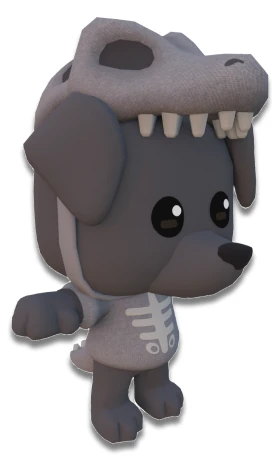

Prendas y conjuntos
Vestuario
Un conjunto se construye sobre el mismo cuerpo que usa el editor de personajes. Cada prenda tiene un punto de anclaje para que pueda acompañar el movimiento.
Prueba la ropa en Koda
Las prendas se muestran en colores lisos. Aún falta incorporar sus texturas. Puedes probar una prenda o un conjunto y cambiar el color de cada pieza.

Vestir al Yunipet
Se elige una prenda de cuerpo o un accesorio para cabeza, espalda, manos o pies. Los pesos del modelo permiten que la prenda acompañe la postura del personaje.
Comparar los ocho conjuntos →Cómo funciona
Cabeza y rostro
Sombreros, gorras y pelucas se sujetan a la cabeza. Los lentes y parches usan el anclaje de los ojos.
Cuerpo y extremidades
Los vestidos y playeras siguen el torso. Los guantes pueden ocupar una sola mano o ambas, y el calzado se ajusta a los pies.
Espalda y conjuntos
Una mochila o una cola de disfraz se sujeta por detrás. El conjunto Dinosaurio combina piezas de varias zonas para vestir al mismo personaje.